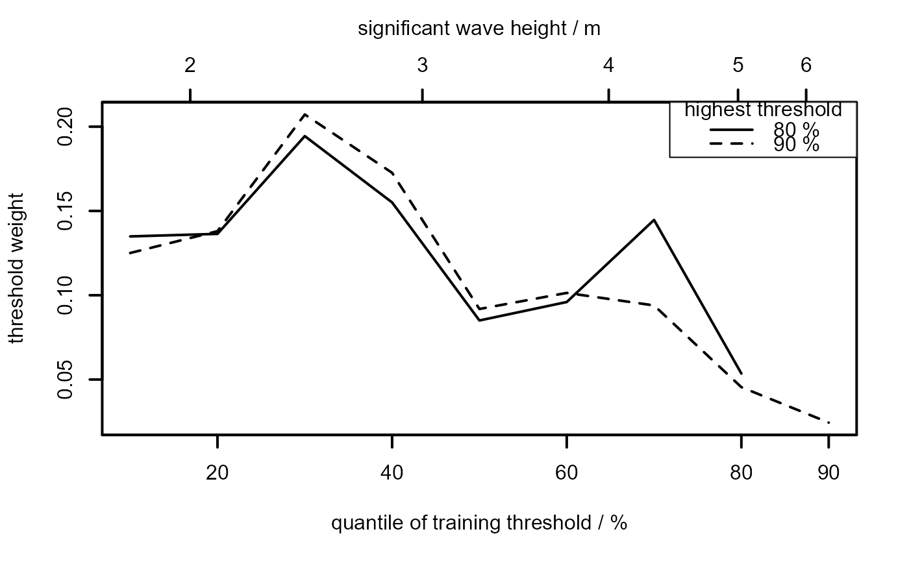

Produces a diagnostic plot to assist in the selection of an extreme value threshold in the case where the data can be treated as independent and identically distributed (i.i.d.) observations. For example, it could be that these observations are the cluster maxima resulting from the declustering of time series data. The predictive ability of models fitted using each of a user-supplied set of thresholds is assessed using leave-one-out cross-validation in a Bayesian setup. These models are based on a Generalized Pareto (GP) distribution for threshold excesses and a binomial model for the probability of threshold exceedance. See Northrop et al. (2017) for details.
ithresh(data, u_vec, ..., n_v = 1, npy = NULL, use_rcpp = TRUE)
| data | A numeric vector of observations. Any missing values will
be removed. The argument |
|---|---|
| u_vec | A numeric vector. A vector of training thresholds
at which inferences are made from a binomial-GP model. These could be
set at sample quantiles of |
| ... | Further (optional) arguments to be passed to the
|
| n_v | A numeric scalar.
Each of the |
| npy | A numeric scalar. The mean number of observations per year
of data, after excluding any missing values, i.e. the number of
non-missing observations divided by total number of years of non-missing
data. May be supplied using as an attribute The value of |
| use_rcpp | A logical scalar. If |
An object (list) of class "ithresh", containing the
components
pred_perf: A numeric matrix with length(u_vec)
rows and n_v columns. Each column contains the values of
the measure of predictive performance. Entries corresponding
to cases where the training threshold is above the validation
threshold will be NA.
u_vec: The argument u_vec to ithresh.
v_vec: A numeric vector. The validation thresholds
implied by the argument n_v to ithresh.
u_ps: A numeric vector. The approximate levels of the
sample quantiles to which the values in u_vec correspond,
i.e. the approximate percentage of the data the lie at or below
each element in u_vec.
v_ps: A numeric vector. The values in u_ps
that correspond to the validation thresholds.
sim_vals: A numeric matrix with 4 columns and
n x length(u_vec) rows. The \(j\)th block of
n rows contains in columns 1-3 the posterior samples of
the threshold exceedance probability, the GP scale
parameter and the GP shape parameter respectively,
based on training threshold u_vec[i],
and in column 4 the value of \(j\).
n: A numeric scalar. The value of n.
npy: A numeric scalar. The value of npy.
data: The argument data to ithresh
detailed above, with any missing values removed.
use_rcpp: A logical scalar indicating whether
rpost_rcpp (use_rcpp = TRUE) or
rpost (use_rcpp = FALSE)
was used for posterior simulation.
for_post: A list containing arguments with which
rpost_rcpp
(or rpost) was called, including
any user-supplied arguments to these functions.
call: The call to ithresh.
For a given threshold in u_vec:
the number of values in data that exceed the threshold,
and the amounts (the threshold excesses) by which these value
exceed the threshold are calculated;
rpost_rcpp
(or rpost) is used to sample from the posterior
distributions of the parameters of a GP model for the threshold
excesses and a binomial model for the probability of threshold
exceedance;
the ability of this binomial-GP model to predict data
thresholded at the validation threshold(s) specified by n_v is
assessed using leave-one-out cross-validation (the measure of
this is given in equation (7) of
Northrop et al. (2017)).
See Northrop et al. (2017) and the introductory threshr vignette for further details and examples.
Northrop, P.J. and Attalides, N. (2016) Posterior propriety in Bayesian extreme value analyses using reference priors Statistica Sinica, 26(2), 721--743 https://doi.org/10.5705/ss.2014.034.
Northrop, P. J., Attalides, N. and Jonathan, P. (2017) Cross-validatory extreme value threshold selection and uncertainty with application to ocean storm severity. Journal of the Royal Statistical Society Series C: Applied Statistics, 66(1), 93-120. https://doi.org/10.1111/rssc.12159
Jonathan, P. and Ewans, K. (2013) Statistical modelling of extreme ocean environments for marine design : a review. Ocean Engineering, 62, 91-109. https://doi.org/10.1016/j.oceaneng.2013.01.004
plot.ithresh for the S3 plot method for objects of
class ithresh.
summary.ithresh Summarizing measures of threshold
predictive performance.
predict.ithresh for predictive inference for the
largest value observed in N years.
rpost in the
revdbayes package for details of the arguments
that can be passed to
rpost_rcpp/rpost.
set_prior and
set_bin_prior in the
revdbayes package for details of how to set a
prior distributions for GP parameters and for the exceedance probability
\(p\).
# Note: # 1. Smoother plots result from making n larger than the default n = 1000. # 2. In some examples below validation thresholds rather higher than is # advisable have been used, with far fewer excesses than the minimum of # 50 suggested by Jonathan and Ewans (2013). ## North Sea significant wave heights, default prior ----------------------- #' # A plot akin to the top left of Figure 7 in Northrop et al. (2017) #' # ... but with fewer training thresholds u_vec_ns <- quantile(ns, probs = seq(0.1, 0.9, by = 0.1)) ns_cv <- ithresh(data = ns, u_vec = u_vec_ns, n_v = 2) plot(ns_cv, lwd = 2, add_legend = TRUE, legend_pos = "topright")## Gulf of Mexico significant wave heights, default prior ------------------ u_vec_gom <- quantile(gom, probs = seq(0.2, 0.9, by = 0.1)) # Setting a prior using its name and parameter value(s) -------------------- # This example gives the same prior as the default gom_cv <- ithresh(data = gom, u_vec = u_vec_gom, n_v = 2, prior = "mdi", h_prior = list(a = 0.6)) ## Setting a user-defined (log-)prior R function --------------------------- # This example also gives the same prior as the default # (It will take longer to run than the example above because ithresh detects # that the prior is an R function and sets use_rcpp to FALSE.) # \donttest{ user_prior <- function(pars, a, min_xi = -1) { if (pars[1] <= 0 | pars[2] < min_xi) { return(-Inf) } return(-log(pars[1]) - a * pars[2]) } user_bin_prior <- function(p, ab) { return(stats::dbeta(p, shape1 = ab[1], shape2 = ab[2], log = TRUE)) } gom_cv <- ithresh(data = gom, u_vec = u_vec_gom, n_v = 2, prior = user_prior, h_prior = list(a = 0.6), bin_prior = user_bin_prior, h_bin_prior = list(ab = c(1 / 2, 1 / 2))) # } ## Setting a user-defined (log-)prior (pointer to a) C++ function ---------- # We make use of a C++ function and function create_prior_xptr() to create # the required pointer from the revdbayes package prior_ptr <- revdbayes::create_prior_xptr("gp_flat") gom_cv <- ithresh(data = gom, u_vec = u_vec_gom, n_v = 2, prior = prior_ptr, h_prior = list(min_xi = -1))